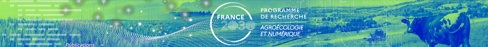

AGROECONUM
Programme de Recherche Agroécologie et Numérique
268
Publications
5
Années
15
Laboratoires
3
Pays
84%
Open Access
📅 Publications par année
📄 Types de documents
🏙️ Top villes
🌍 Top pays
🔬 Top laboratoires
👩🔬 Top auteurs (par nb. de publications)
🧬 Domaines scientifiques